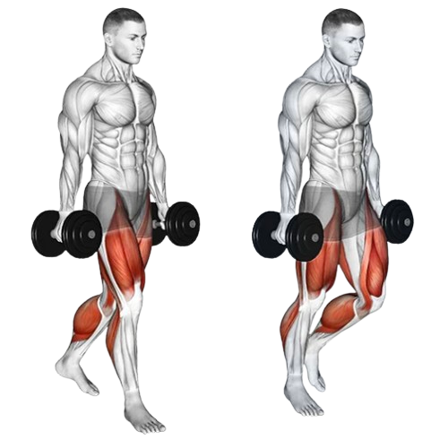

07
Forearm
- Flexor Carpi Radialis: Helps bend the wrist and move it toward the thumb side. It also assists with hand stabilization during gripping.
- Flexor Carpi Ulnaris: Bends the wrist and moves it toward the pinky side. It’s important for precise wrist control.
- Flexor Digitorum Superficialis: Flexes the fingers at the middle joints and helps with wrist flexion.
- Flexor Digitorum Profundus: Flexes the fingers at the tips, enabling a firm grip.
- Extensor Carpi Radialis Longus: Extends and moves the wrist toward the thumb side, aiding in stabilizing the wrist.
- Extensor Carpi Ulnaris: Extends the wrist and moves it toward the pinky side, balancing hand movements.
- Extensor Digitorum: Extends the fingers and wrist, allowing for opening the hand.
- Extensor Pollicis Longus: Specifically extends the thumb, aiding in thumb movements like reaching or gripping.
- Wrist Curls
- Farmer Carries
3x6-8 (3 sets, 6-8 repitions)
Wrist curls are an isolation exercise that strengthens the muscles of your wrists and
forearms, especially the wrist extensors and wrist flexors. Training forearms will not only
balance out the look of your arms by adding muscle mass to the lower arms, it will improve
your wrist and grip strength to improve pull ups and barbell exercises like bent over rows
and can help to prevent injury caused from wrist and hand overuse.
Even though all dumbbell and barbell exercises work your forearms to some extent, it's a
good idea to add specific wrist and forearm training into your workouts one to two times a
week. Wrist curls and other forearm and grip exercises target your training by isolating the
smaller muscles of the lower arms, which can often be underused in other arm exercises.

Wrist curls are an isolation exercise that strengthens the muscles of your wrists and forearms, especially the wrist extensors and wrist flexors. Training forearms will not only balance out the look of your arms by adding muscle mass to the lower arms, it will improve your wrist and grip strength to improve pull ups and barbell exercises like bent over rows and can help to prevent injury caused from wrist and hand overuse.
Even though all dumbbell and barbell exercises work your forearms to some extent, it's a good idea to add specific wrist and forearm training into your workouts one to two times a week. Wrist curls and other forearm and grip exercises target your training by isolating the smaller muscles of the lower arms, which can often be underused in other arm exercises.
3xFailure (3 sets until failure)
Farmer carries, also known as farmer's walks, are a functional strength training exercise that primarily targets the forearms, grip, and core. The exercise involves holding a heavy weight in each hand—such as dumbbells, kettlebells, or specialized farmer's carry handles—and walking a designated distance while maintaining a strong, upright posture. This simple yet highly effective movement challenges your grip strength and improves your overall stability.
The prolonged grip required during farmer carries makes them excellent for developing forearm strength and endurance. In addition to enhancing your grip, the exercise engages the shoulders, traps, and core muscles, promoting better posture and balance. Farmer carries are also a full-body conditioning tool, improving cardiovascular endurance and overall functional strength.

Farmer carries, also known as farmer's walks, are a functional strength training exercise that primarily targets the forearms, grip, and core. The exercise involves holding a heavy weight in each hand—such as dumbbells, kettlebells, or specialized farmer's carry handles—and walking a designated distance while maintaining a strong, upright posture. This simple yet highly effective movement challenges your grip strength and improves your overall stability.
The prolonged grip required during farmer carries makes them excellent for developing forearm strength and endurance. In addition to enhancing your grip, the exercise engages the shoulders, traps, and core muscles, promoting better posture and balance. Farmer carries are also a full-body conditioning tool, improving cardiovascular endurance and overall functional strength.